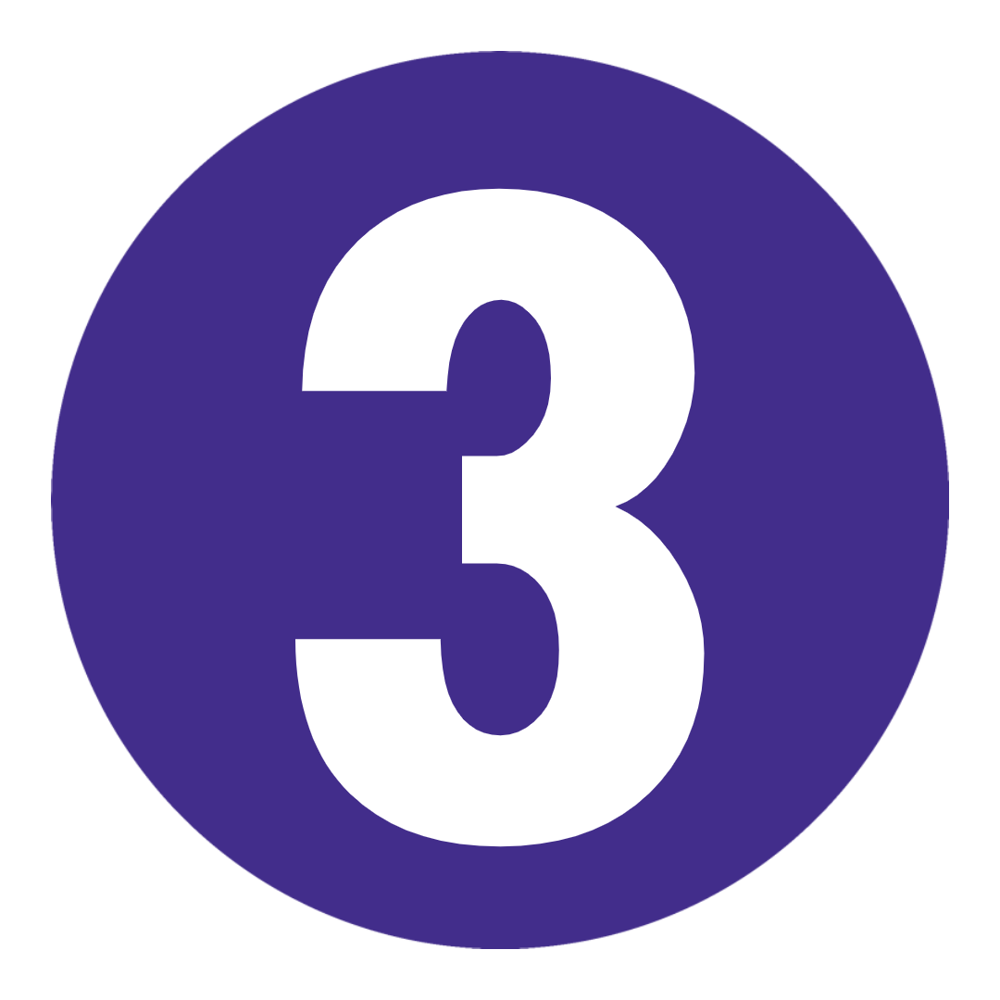
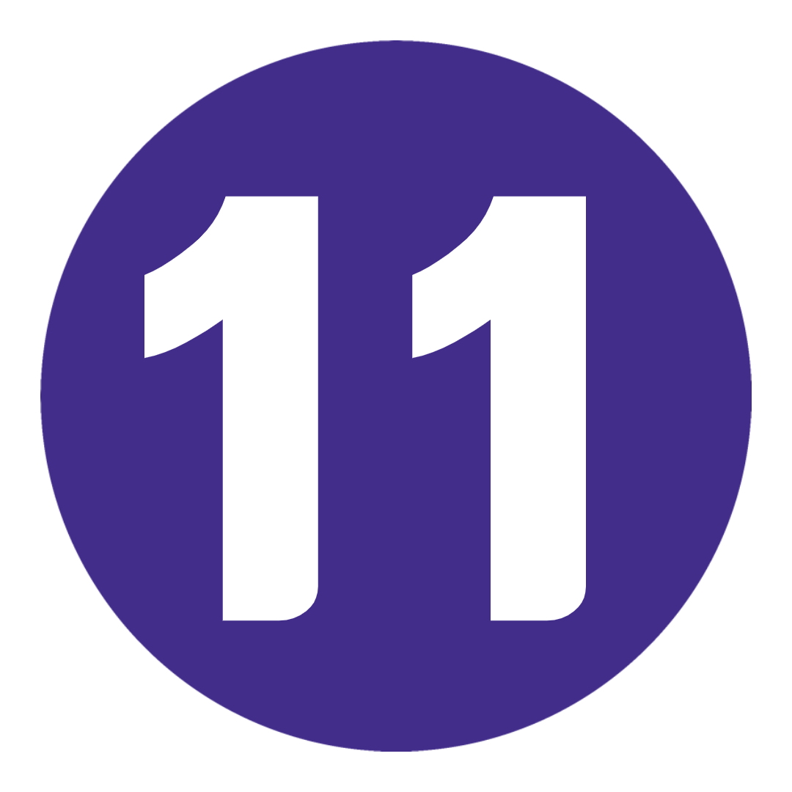
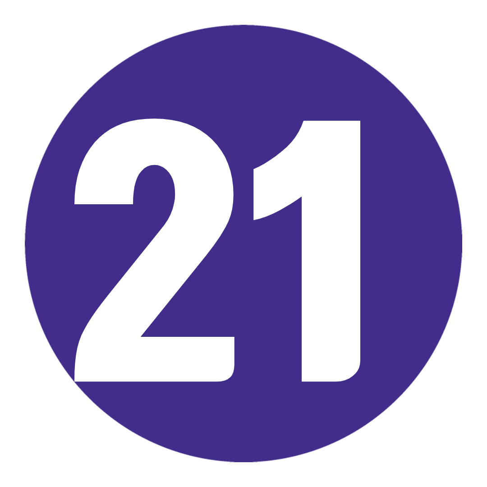
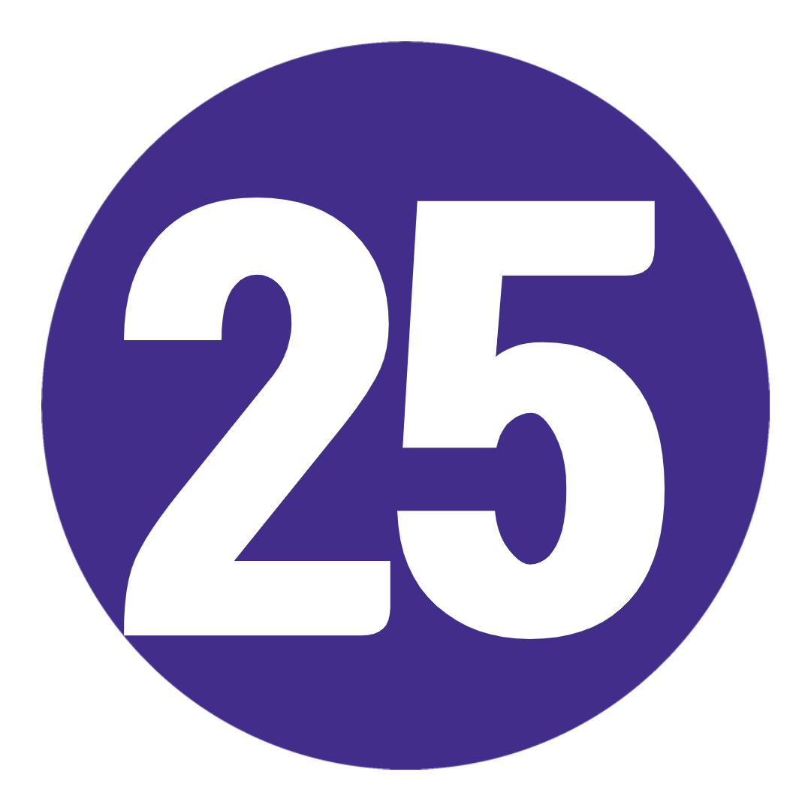
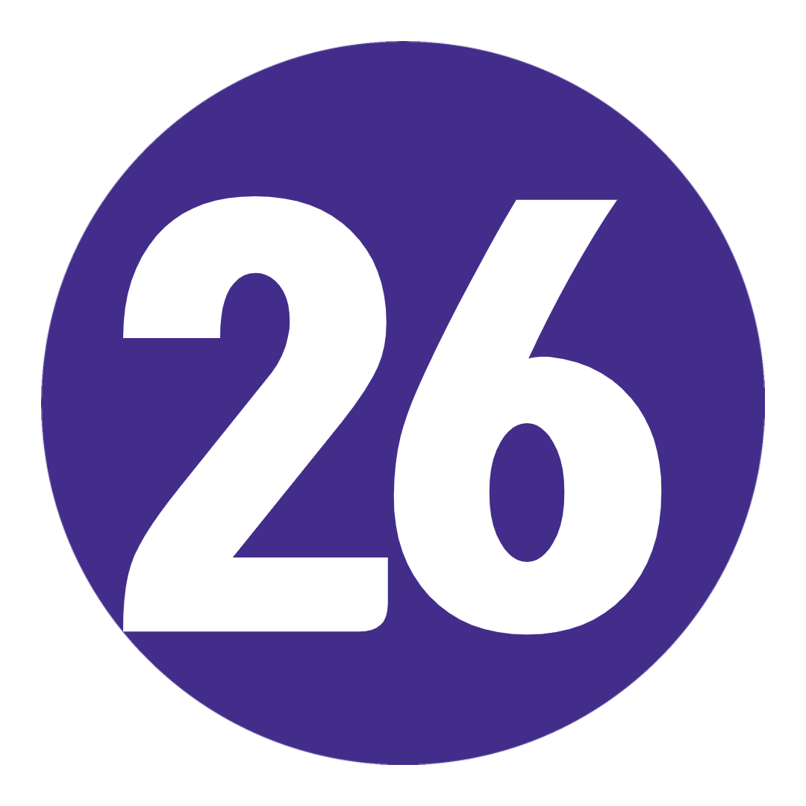

여행 개요
지 도
TRIP VIBE = 사교 활동, 버킷리스트 명소, 즐거운 시간이 가득한 빠른 속도로 진행되는 재미.
이름에 단서가 있어 크네요. 유럽식입니다. 우린 거의 한 달 동안 입을 다물지 못할 도시들, 눈을 뗄 수 없는 해안선들, 그리고 떠들썩한 회사들과 얘기하고 있어요 프랑스
리비에라, 케팔로니아,
두브로브닉 해변을 수평으로 가로지르는 것에서부터 로마, 파리, 베를린의 문화적 아이콘까지, 여러분이 가 본 것 중 가장 크고 최고의 재미를 준비하세요. 보장된
여행 일정
-
 영국 런던에서 프랑스 파리까지
Queenie에게 손을 흔들고, 승무원을 만나고, 보급품을 챙기세요. 우리는 수로를 건너기 위해 일찍 출발합니다. 코코 샤넬, 모나리자, 꿈의 크림 케이크의 고향 - 파리는 문화, 패션, 음식의 모든 것을 위한 유럽의 수도로 명성이 자자합니다. 오늘 밤 첫 저녁을 함께하기 전에 드라이브 투어를 통해 사랑의 도시를 더 잘 알게 될 것입니다.
영국 런던에서 프랑스 파리까지
Queenie에게 손을 흔들고, 승무원을 만나고, 보급품을 챙기세요. 우리는 수로를 건너기 위해 일찍 출발합니다. 코코 샤넬, 모나리자, 꿈의 크림 케이크의 고향 - 파리는 문화, 패션, 음식의 모든 것을 위한 유럽의 수도로 명성이 자자합니다. 오늘 밤 첫 저녁을 함께하기 전에 드라이브 투어를 통해 사랑의 도시를 더 잘 알게 될 것입니다.
키워드 저녁 + 파리 하이라이트 드라이브 -
 파리이것은 당신의 날, 당신의 방법입니다. 따라서 매초를 계산하십시오. 루브르 박물관을 방문하여 버킷 목록에 확실한 움푹 들어간 곳을 만드십시오(미리 구입하십시오!). 개선문(Arc de Triomphe)의 사진을 찍어보세요. 샹젤리제 거리를 거닐다. 또는 여행 싹과 함께 숨겨진 뒷골목을 발견하십시오. 걷는 것이 당신의 것이 아니겠습니까? 옵션으로 제공되는 자전거 투어에서 다리를 쭉 뻗으세요. 또는 선택 사항인 세느강 유람선에 탑승해 보세요. 오늘 밤, 선택 가능한 카바레 쇼를 위해 인상적인 드레스를 입으십시오. 아니면 몽파르나스 전망대로 올라가 왜 이곳을 빛의 도시라고 부르는지 알아보세요.
파리이것은 당신의 날, 당신의 방법입니다. 따라서 매초를 계산하십시오. 루브르 박물관을 방문하여 버킷 목록에 확실한 움푹 들어간 곳을 만드십시오(미리 구입하십시오!). 개선문(Arc de Triomphe)의 사진을 찍어보세요. 샹젤리제 거리를 거닐다. 또는 여행 싹과 함께 숨겨진 뒷골목을 발견하십시오. 걷는 것이 당신의 것이 아니겠습니까? 옵션으로 제공되는 자전거 투어에서 다리를 쭉 뻗으세요. 또는 선택 사항인 세느강 유람선에 탑승해 보세요. 오늘 밤, 선택 가능한 카바레 쇼를 위해 인상적인 드레스를 입으십시오. 아니면 몽파르나스 전망대로 올라가 왜 이곳을 빛의 도시라고 부르는지 알아보세요.
추가 옵션 파리 자전거 투어: €30부터 / 세느강 유람선: €10부터 / 파리 카바레 쇼: €65부터 -
 파리에서 스위스 알프스로
눈 덮인 봉우리를 위해 파리 거리에서 거래하십시오. 성대를 따뜻하게 하고 산으로 가는 길에 쿵쿵거리는 노래를 부를 것입니다. 물론 가는 길에 몇 장의 사진을 찍기 위해 멈춥니다. '유럽의 정상', 72개의 폭포와 스위스에서 가장 큰 자연 보호 지역 중 하나인 '탑 오브 유럽'의 본고장 - 오늘 밤 우리는 마음을 설레게 하는 스위스 알프스에서 잠을 자고 있습니다. 이번 전야제: 얼음처럼 차가운 베비와 함께 신선한 고산 공기에 몸을 맡기거나 시내로 가서 계곡의 분위기를 만끽하세요. 예, 이것이 당신이 온 이유입니다.
키워드 아침밥 -
 스위스 알프스 스위스 알프스에 Tinder 약력이 있다면 다음과 같이 읽힐 것입니다. 재미있는 야외 활동 애호가 – 함께 모험을 나눌 아드레날린 중독자를 찾고 있습니다. 오른쪽으로 스와이프합니다. 등산. 자전거 타기. 스카이 다이빙. 헬리콥터 탑승. 모든 것이 여기에 있습니다. 좀 더 소박한 것을 원하신다면 나이키를 신고 계곡 바닥을 걸어보세요. 또는 융프라우 산 정상을 선택적으로 방문하려면 융프라우반 철도를 타십시오. 가는 길에 동화 같은 마을을 많이 기대하십시오! 아직 치즈 퐁듀를 먹지 않았습니까? 가다. 지금.
스위스 알프스 스위스 알프스에 Tinder 약력이 있다면 다음과 같이 읽힐 것입니다. 재미있는 야외 활동 애호가 – 함께 모험을 나눌 아드레날린 중독자를 찾고 있습니다. 오른쪽으로 스와이프합니다. 등산. 자전거 타기. 스카이 다이빙. 헬리콥터 탑승. 모든 것이 여기에 있습니다. 좀 더 소박한 것을 원하신다면 나이키를 신고 계곡 바닥을 걸어보세요. 또는 융프라우 산 정상을 선택적으로 방문하려면 융프라우반 철도를 타십시오. 가는 길에 동화 같은 마을을 많이 기대하십시오! 아직 치즈 퐁듀를 먹지 않았습니까? 가다. 지금.
추가 옵션 융프라우('유럽의 정상')로의 경치 좋은 여행: 161.80 CHF부터 / 스위스 알프스에서 스카이다이빙: 390CHF(추가 보증금 €50)부터 / 경치 좋은 헬리콥터 타기: 195 CHF부터 (+ 보증금 €20) -
 스위스 알프스에서 프랑스 리비에라로
GLAM French Riviera로 향하는 동안 gruezi와 bonjour를 교환하십시오. 숙소에 짐을 버리고 오늘 오후는 전적으로 당신에게 달려 있습니다! 세계에서 가장 호화로운 해안가 속성 중 일부를 산책하면서 유명인사를 만나보세요(여기서는 판단할 필요 없음). 물놀이를 위해 해변으로 향합니다. 아니면 정말 맛있는 해산물을 먹을 수 있는 현지인을 찾아보세요. 오늘 밤은 갱단과 함께 하는 해피 아워입니다(행복은 보장되지만 칵테일은 할인되지 않습니다).
스위스 알프스에서 프랑스 리비에라로
GLAM French Riviera로 향하는 동안 gruezi와 bonjour를 교환하십시오. 숙소에 짐을 버리고 오늘 오후는 전적으로 당신에게 달려 있습니다! 세계에서 가장 호화로운 해안가 속성 중 일부를 산책하면서 유명인사를 만나보세요(여기서는 판단할 필요 없음). 물놀이를 위해 해변으로 향합니다. 아니면 정말 맛있는 해산물을 먹을 수 있는 현지인을 찾아보세요. 오늘 밤은 갱단과 함께 하는 해피 아워입니다(행복은 보장되지만 칵테일은 할인되지 않습니다).
키워드 아침밥 -
 모나코를 포함한 프랑스 리비에라오늘 아침, 당신은 당신을! 잘 자. 해변에서 한가롭게. 니스(Nice)의 구시가지(Old Town)에 있는 디자이너 부티크에서 마음껏 뛰어보세요. 신축성 있는 허리띠로 처리할 수 있는 모든 장식용 페이스트리를 시험해 본 다음 모든 전망을 감상할 수 있는 캐슬 힐(Castle Hill)을 걸어 올라가 보세요. 나중에: 모나코의 도보 여행에서 제트기를 타고 1%가 어떻게 사는지 확인하십시오(힌트: 페라리와 캐비어 목욕이 포함됨). 운이 좋은 느낌? Monte Carlo Casino에서 테이블을 치고 비가 내리거나 내리지 않게하십시오.
모나코를 포함한 프랑스 리비에라오늘 아침, 당신은 당신을! 잘 자. 해변에서 한가롭게. 니스(Nice)의 구시가지(Old Town)에 있는 디자이너 부티크에서 마음껏 뛰어보세요. 신축성 있는 허리띠로 처리할 수 있는 모든 장식용 페이스트리를 시험해 본 다음 모든 전망을 감상할 수 있는 캐슬 힐(Castle Hill)을 걸어 올라가 보세요. 나중에: 모나코의 도보 여행에서 제트기를 타고 1%가 어떻게 사는지 확인하십시오(힌트: 페라리와 캐비어 목욕이 포함됨). 운이 좋은 느낌? Monte Carlo Casino에서 테이블을 치고 비가 내리거나 내리지 않게하십시오.
키워드 Trip Leader와 함께하는 모나코 도보 여행 -
 프렌치 리비에라에서 피사를 거쳐 이탈리아 피렌체로
마지막으로 한 번의 수영으로 짜내십시오. 커피 내려. 그리고 프랑스와 작별을 고합니다. 우리는 장화의 나라로 향하고 있습니다. 첫 번째 목적지는 피사입니다. 그래서 그 사진을 위한 좋은 포즈를 생각해 보세요 . 그 후, 토스카나 요리의 수도이자 젤라토의 발상지로 이동하면서 음식을 아기 노래로 만드십시오. 오늘 저녁: 아르노 강을 따라 산책하며 일몰을 감상하세요. 그런 다음: 좋은 재료를 한 국자(또는 두 개) 샘플링할 시간입니다. 누가 노래방이라고 했나요? 기분이 든다면 나중에 술집에서 고전의 대결에 갱단에 합류하십시오.
프렌치 리비에라에서 피사를 거쳐 이탈리아 피렌체로
마지막으로 한 번의 수영으로 짜내십시오. 커피 내려. 그리고 프랑스와 작별을 고합니다. 우리는 장화의 나라로 향하고 있습니다. 첫 번째 목적지는 피사입니다. 그래서 그 사진을 위한 좋은 포즈를 생각해 보세요 . 그 후, 토스카나 요리의 수도이자 젤라토의 발상지로 이동하면서 음식을 아기 노래로 만드십시오. 오늘 저녁: 아르노 강을 따라 산책하며 일몰을 감상하세요. 그런 다음: 좋은 재료를 한 국자(또는 두 개) 샘플링할 시간입니다. 누가 노래방이라고 했나요? 기분이 든다면 나중에 술집에서 고전의 대결에 갱단에 합류하십시오.
키워드 아침밥 + 피사의 사탑 방문 -
 피렌체-로마길을 나서기 전에 현지 가이드와 함께 이 예술적 수도에 대해 더 깊이 알아볼 것입니다. 우피치 갤러리입니다. 베키오 다리. 시뇨리아 광장. 두오모. 다 보세요. 그 다음에? 역사 수업은 계속됩니다. 이 수업만 지루하지 않습니다. 저희를 믿으세요. 우리는 판테온(Pantheon)을 지나 트레비 분수(Trevi Fountain)에 2센트를 던질 것입니다. 하루가 끝나기 전에 스페인 계단(Spanish Steps)에 앉아 거대한 콜로세움(Colosseum)을 둘러볼 것입니다. 오늘 밤, 당신은 미식가를 위해 디즈니랜드에 있습니다. 그러니 뚱뚱한 바지를 입고 펜네 알라 보드카를 찾아보세요(파스타와 보드카는 BFF입니다. 저희를 믿으세요).
피렌체-로마길을 나서기 전에 현지 가이드와 함께 이 예술적 수도에 대해 더 깊이 알아볼 것입니다. 우피치 갤러리입니다. 베키오 다리. 시뇨리아 광장. 두오모. 다 보세요. 그 다음에? 역사 수업은 계속됩니다. 이 수업만 지루하지 않습니다. 저희를 믿으세요. 우리는 판테온(Pantheon)을 지나 트레비 분수(Trevi Fountain)에 2센트를 던질 것입니다. 하루가 끝나기 전에 스페인 계단(Spanish Steps)에 앉아 거대한 콜로세움(Colosseum)을 둘러볼 것입니다. 오늘 밤, 당신은 미식가를 위해 디즈니랜드에 있습니다. 그러니 뚱뚱한 바지를 입고 펜네 알라 보드카를 찾아보세요(파스타와 보드카는 BFF입니다. 저희를 믿으세요).
키워드 아침밥 + 피렌체 도보여행 + 로마 도보여행 -
 로마로마의 휴일에 대한 환상을 실현할 시간입니다. 오늘은 베스파, 에스프레소, 두 뺨에 키스하는 키스 및 피자에 관한 모든 것입니다. 바티칸 시국의 선택적인 여행에서 당신의 축복을 세어보십시오(그것이 당신의 일이라면). 또는 Capitoline Hill로 올라가 포로 로마노와 콜로세움의 멋진 전망을 감상해 보세요. 그런 다음 현지인들이 하는 대로 현지 카페나 광장에서 약간의 돌체 파 니엔테(맛있는 나태함)에 탐닉하십시오. 오늘 밤, 2라운드를 위해 뚱뚱한 바지를 털어내세요.
로마로마의 휴일에 대한 환상을 실현할 시간입니다. 오늘은 베스파, 에스프레소, 두 뺨에 키스하는 키스 및 피자에 관한 모든 것입니다. 바티칸 시국의 선택적인 여행에서 당신의 축복을 세어보십시오(그것이 당신의 일이라면). 또는 Capitoline Hill로 올라가 포로 로마노와 콜로세움의 멋진 전망을 감상해 보세요. 그런 다음 현지인들이 하는 대로 현지 카페나 광장에서 약간의 돌체 파 니엔테(맛있는 나태함)에 탐닉하십시오. 오늘 밤, 2라운드를 위해 뚱뚱한 바지를 털어내세요.
추가 옵션 바티칸 시국 가이드 투어: €45부터 -
 로마에서 그리스 레프카다까지 (야간 페리
이용)진실 폭탄 경고: 오늘 로마에서 안코나까지 운전해야 하는 시간이 있습니다. 그러나 일단 우리가 탑승하면 실내 욕실이 딸린 트윈룸을 갖게 됩니다. 또한 당신을 즐겁게 해줄 멋진 AF 여행 동료가 있습니다. 그리고 깨어났을 때? 당신은 그리스에 있습니다 – 젠장, 예!
로마에서 그리스 레프카다까지 (야간 페리
이용)진실 폭탄 경고: 오늘 로마에서 안코나까지 운전해야 하는 시간이 있습니다. 그러나 일단 우리가 탑승하면 실내 욕실이 딸린 트윈룸을 갖게 됩니다. 또한 당신을 즐겁게 해줄 멋진 AF 여행 동료가 있습니다. 그리고 깨어났을 때? 당신은 그리스에 있습니다 – 젠장, 예!
키워드 아침밥 + 야간 페리 -
 그리스 레프카다
다음 3일 동안 우리의 기지인 입이 떡 벌어지는 레프카다 섬에 정착하기 전에 마차 창 너머로 그리스 해안선이 윙윙거리는 모습을 지켜보세요. 예상: 초승달 모양의 해변과 자갈이 깔린 만에서 찰랑이는 눈부신 푸른 바다. 그리고 그것들을 최대한 활용할 수 있는 자유로운 날. 악몽. 니드리 비치(Nidri Beach)로 향하면 수정처럼 맑은 얕은 물과 해안가 바가 있습니다. 또는 언덕에서 휴식을 취하고 폭포를 쫓으러 가십시오. 나중에: 호텔의 풀사이드 바에서 저녁 햇살을 만끽하고 맘마미아를 즐겨보세요! 클래식(또는 수영장에 몸을 담그고 잊혀지지 않는 ABBA 멜로디를 숨김).
키워드 아침밥 -
 그리스 레프카다에서 항해어이, 내 마음! 오늘 아침 우리는 멋진 이오니아 해를 따라 흔들리는 하루 동안 마른 땅을 교환합니다. 보트를 타고 바다 다리를 찾으십시오. 오늘은 좋은 다리가 될 것입니다. 첫 번째 기항지: 파란색과 흰색의 낙원인 Egremni Beach에서 수영을 즐길 수 있습니다. 그런 다음: Kefalonia의 BEAUT 섬으로 항해를 시작하여 좀 더 주변을 둘러보고 마을을 탐험할 것입니다. 속이 울렁거린다? 우리는 그것을 분류하기 위해 선상에서 그리스 BBQ 점심을 먹었습니다. 그리고 저녁에 닻을 내리고 호텔로 돌아가기 전에 차가운 이타카 섬에서 마지막으로 한 정거장입니다. T Swift가 가르쳐준 것처럼 모래를 털어내고 갱단과 항해 이야기를 교환하세요. 으아악!
그리스 레프카다에서 항해어이, 내 마음! 오늘 아침 우리는 멋진 이오니아 해를 따라 흔들리는 하루 동안 마른 땅을 교환합니다. 보트를 타고 바다 다리를 찾으십시오. 오늘은 좋은 다리가 될 것입니다. 첫 번째 기항지: 파란색과 흰색의 낙원인 Egremni Beach에서 수영을 즐길 수 있습니다. 그런 다음: Kefalonia의 BEAUT 섬으로 항해를 시작하여 좀 더 주변을 둘러보고 마을을 탐험할 것입니다. 속이 울렁거린다? 우리는 그것을 분류하기 위해 선상에서 그리스 BBQ 점심을 먹었습니다. 그리고 저녁에 닻을 내리고 호텔로 돌아가기 전에 차가운 이타카 섬에서 마지막으로 한 정거장입니다. T Swift가 가르쳐준 것처럼 모래를 털어내고 갱단과 항해 이야기를 교환하세요. 으아악!
키워드 아침밥 + 점심밥 + 그리스 섬 항해 -
 그리스 레프카다에서 항해갑판에 모든 손! 글쎄 - 손, 발 및 나머지 모든 사람들이 바람직합니다. 꿈결 같은 이오니아 제도 주변에서 더 많은 항해, 수영, 간식을 위해 오늘 아침 보트로 돌아옵니다. 우리는 파파니콜리스 동굴(참고로 제2차 세계 대전 동안 여기에 숨어 있던 너무 큰 그리스 잠수함)에 정박하여 사진을 찍고 경치가 아름다운 메가니시 섬으로 향하는 코스를 설정할 것입니다. 그리고 이 아르보? 또 다른 것은 바비 점심(feat. souvlaki), 더 많은 수영 세션, 이웃의 울창한 개인 섬 주변 소풍을 포함했습니다. 오늘 저녁: 그리스에서의 마지막 밤이므로 해변가 바에 앉아 최대한 즐기십시오.
그리스 레프카다에서 항해갑판에 모든 손! 글쎄 - 손, 발 및 나머지 모든 사람들이 바람직합니다. 꿈결 같은 이오니아 제도 주변에서 더 많은 항해, 수영, 간식을 위해 오늘 아침 보트로 돌아옵니다. 우리는 파파니콜리스 동굴(참고로 제2차 세계 대전 동안 여기에 숨어 있던 너무 큰 그리스 잠수함)에 정박하여 사진을 찍고 경치가 아름다운 메가니시 섬으로 향하는 코스를 설정할 것입니다. 그리고 이 아르보? 또 다른 것은 바비 점심(feat. souvlaki), 더 많은 수영 세션, 이웃의 울창한 개인 섬 주변 소풍을 포함했습니다. 오늘 저녁: 그리스에서의 마지막 밤이므로 해변가 바에 앉아 최대한 즐기십시오.
키워드 아침밥 + 점심밥 + 그리스 섬 항해 -
 그리스 레프카다에서 알바니아 티라나까지과거 공산주의 수도를 선명한 색상으로 칠하면 어떻게 될까요? Tirana의 예술가에서 시장으로 변신한 TED 연사인 Edi Rama에 따르면 사람들은 세금을 내기 시작했고 범죄율은 급감했습니다. 실화. 드라이브 투어에서 주요 명소를 체크할 때 현지 가이드에게 인사하세요. 그런 다음: 여기에서 엄청나게 많은 오래된 벙커를 확인하십시오. 오늘 밤, 당신의 임무는 – 당신이 그것을 받아들이기로 결정했다면 – 밖으로 나가서 도시 최고의 튀긴 카카발 치즈를 찾으십시오.
그리스 레프카다에서 알바니아 티라나까지과거 공산주의 수도를 선명한 색상으로 칠하면 어떻게 될까요? Tirana의 예술가에서 시장으로 변신한 TED 연사인 Edi Rama에 따르면 사람들은 세금을 내기 시작했고 범죄율은 급감했습니다. 실화. 드라이브 투어에서 주요 명소를 체크할 때 현지 가이드에게 인사하세요. 그런 다음: 여기에서 엄청나게 많은 오래된 벙커를 확인하십시오. 오늘 밤, 당신의 임무는 – 당신이 그것을 받아들이기로 결정했다면 – 밖으로 나가서 도시 최고의 튀긴 카카발 치즈를 찾으십시오.
키워드 아침밥 + 티라나 드라이브 -
 티라나에서 크로아티아 두브로브니크까지우리가 유럽에서 가장 유명한 성벽 도시로 가는 길에 창가에 코를 대고 마차 창 너머로 질주하는 모든 멋진 전망을 만끽하세요. 왕좌의 게임 감사합니다. 오늘 오후에는 현지 가이드와 함께 두브로브니크의 작은 조약돌 거리를 산책합니다. 그리고 나중에? Buža Bar로 가 여유로운 절벽 쪽 베비를 즐겨보세요. 또는 Revelin 나이트클럽에서 곡예를 감상해 보세요. 16세기 요새에 있다고 언급했습니까?
티라나에서 크로아티아 두브로브니크까지우리가 유럽에서 가장 유명한 성벽 도시로 가는 길에 창가에 코를 대고 마차 창 너머로 질주하는 모든 멋진 전망을 만끽하세요. 왕좌의 게임 감사합니다. 오늘 오후에는 현지 가이드와 함께 두브로브니크의 작은 조약돌 거리를 산책합니다. 그리고 나중에? Buža Bar로 가 여유로운 절벽 쪽 베비를 즐겨보세요. 또는 Revelin 나이트클럽에서 곡예를 감상해 보세요. 16세기 요새에 있다고 언급했습니까?
키워드 아침밥 + 두브로브니크 도보여행 -
 두브로브니크속지 마세요. 두브로브니크는 계단에서 셀카를 찍는 것 이상입니다. 그러나 오늘 선택적인 Cersei 테마 투어로 GOT을 완전히 채울 수 있습니다. 오히려 물에 걸릴? 바다 카약 여행에 등록하십시오 - 로크룸 섬의 수영 정류장이 포함되어 있습니다. 고대 도시의 성벽을 따라 산책하거나 케이블카를 타고 스르드 산(Mt. Srd)까지 올라가면서 멋진 전망을 감상하세요. 그리고 오늘 밤: 2라운드를 위해 d층을 치십시오. 또는 크로아티아의 맛있는 포도 주스를 맛보기 위해 현지 와인 바를 찾으십시오.
두브로브니크속지 마세요. 두브로브니크는 계단에서 셀카를 찍는 것 이상입니다. 그러나 오늘 선택적인 Cersei 테마 투어로 GOT을 완전히 채울 수 있습니다. 오히려 물에 걸릴? 바다 카약 여행에 등록하십시오 - 로크룸 섬의 수영 정류장이 포함되어 있습니다. 고대 도시의 성벽을 따라 산책하거나 케이블카를 타고 스르드 산(Mt. Srd)까지 올라가면서 멋진 전망을 감상하세요. 그리고 오늘 밤: 2라운드를 위해 d층을 치십시오. 또는 크로아티아의 맛있는 포도 주스를 맛보기 위해 현지 와인 바를 찾으십시오.
추가 옵션 두브로브니크의 고대 성벽 주변에서 바다 카약 타기: 230 HRK부터 / 왕좌의 게임 두브로브니크 투어: €15부터 -
 두브로브니크-자다르약간... 기발한 일을 할 준비가 되었나요? 바다 오르간이라고 합니다. 그리고 우리는 Trip Leader와 함께하는 오리엔테이션 투어에서 이 독특한 예술 설치물과 로마 유적과 공공 예술이 혼합된 자다르의 다양한 모습을 발견하게 될 것입니다. 베어링이 설치되고 나머지 시간은 우리의 몫입니다. 구시가지를 탐험하고, 성벽을 둘러보거나, 가든 라운지에서 칵테일을 마시며 휴식을 취하십시오. 100% 당신에게 달려 있습니다.
두브로브니크-자다르약간... 기발한 일을 할 준비가 되었나요? 바다 오르간이라고 합니다. 그리고 우리는 Trip Leader와 함께하는 오리엔테이션 투어에서 이 독특한 예술 설치물과 로마 유적과 공공 예술이 혼합된 자다르의 다양한 모습을 발견하게 될 것입니다. 베어링이 설치되고 나머지 시간은 우리의 몫입니다. 구시가지를 탐험하고, 성벽을 둘러보거나, 가든 라운지에서 칵테일을 마시며 휴식을 취하십시오. 100% 당신에게 달려 있습니다.
키워드 아침밥 + 자다르 오리엔테이션 -
 자다르에서 이탈리아 베니스까지다시 젤라토 모양의 꿈을 꾸기 시작한다면? DW – 오늘 늦게 베니스에 도착하면 배를 채울 수 있는 또 다른 기회가 있습니다. 그러나 먼저: 아름다운 Postojna 동굴에서 선택적으로 석순을 관찰합니다. 재미있는 사실: 이 터널과 동굴의 자연 미로가 약 2백만 년 전에 Pivka 강에 의해 움푹 꺼졌습니다. 베니스에 도착하면 모든 소란이 무엇인지 볼 시간입니다. 수백 년 된 건축물. 독창적인 요리. 그리고 양동이의 문화. 저녁 식사는 오늘 밤 당신에게 달려 있지만 어디로 가야할지에 대한 내부 특종을 가지고 있습니다.
자다르에서 이탈리아 베니스까지다시 젤라토 모양의 꿈을 꾸기 시작한다면? DW – 오늘 늦게 베니스에 도착하면 배를 채울 수 있는 또 다른 기회가 있습니다. 그러나 먼저: 아름다운 Postojna 동굴에서 선택적으로 석순을 관찰합니다. 재미있는 사실: 이 터널과 동굴의 자연 미로가 약 2백만 년 전에 Pivka 강에 의해 움푹 꺼졌습니다. 베니스에 도착하면 모든 소란이 무엇인지 볼 시간입니다. 수백 년 된 건축물. 독창적인 요리. 그리고 양동이의 문화. 저녁 식사는 오늘 밤 당신에게 달려 있지만 어디로 가야할지에 대한 내부 특종을 가지고 있습니다.
키워드 아침밥
추가 옵션 Postojna 동굴 방문: €25부터 / 맞춤 여행 티셔츠 또는 후드티를 받으세요: 최저 €21 -
 베니스당신은 그것을 떠있는 도시로 알고 있지만 이곳은 실제로 (천천히) 가라 앉고 있습니다. 오늘 우리는 산마르코 광장, 도제스 궁전, 아카데미아 다리 등을 둘러보며 여행 리더와 함께 도보 여행을 하는 베니스의 일반적인 용의자를 누구인지 확인할 것입니다. 그런 다음: 대운하를 따라 선택적으로 곤돌라를 타십시오. 당신은 결국 베니스에 있습니다. 오늘 오후의 자유 시간에 대한 제안이 필요하십니까? 내부 팁: 시간을 할애하여 장엄한 Libreria Acqua Alta 서점을 찾거나 Guidecca Island로 여행을 떠나 관광 트레일을 떠나십시오.
베니스당신은 그것을 떠있는 도시로 알고 있지만 이곳은 실제로 (천천히) 가라 앉고 있습니다. 오늘 우리는 산마르코 광장, 도제스 궁전, 아카데미아 다리 등을 둘러보며 여행 리더와 함께 도보 여행을 하는 베니스의 일반적인 용의자를 누구인지 확인할 것입니다. 그런 다음: 대운하를 따라 선택적으로 곤돌라를 타십시오. 당신은 결국 베니스에 있습니다. 오늘 오후의 자유 시간에 대한 제안이 필요하십니까? 내부 팁: 시간을 할애하여 장엄한 Libreria Acqua Alta 서점을 찾거나 Guidecca Island로 여행을 떠나 관광 트레일을 떠나십시오.
키워드 베니스 도보여행
추가 옵션 곤돌라 타기: €20부터 -
 베니스에서 독일 뮌헨으로다음? 맥주가 공식적으로 필수 식품 그룹으로 간주되는 국가(소시지, 소금에 절인 양배추 바로 옆). 독일에 인사하세요! 뮌헨의 도보 여행으로 시작하겠습니다. 그 다음은 여러분이 기다리던 바로 그 순간입니다. 바로 레더호젠을 입기에 적절한 때입니다. 428년 된 호프브로이하우스(Hofbräuhaus)로 가 왕실 해피 아워를 경험하거나 여행 동료와 함께 중국식 비어 가든(또는 그와 관련된 모든 비어 가든)을 찾아보세요. 프로스트!
베니스에서 독일 뮌헨으로다음? 맥주가 공식적으로 필수 식품 그룹으로 간주되는 국가(소시지, 소금에 절인 양배추 바로 옆). 독일에 인사하세요! 뮌헨의 도보 여행으로 시작하겠습니다. 그 다음은 여러분이 기다리던 바로 그 순간입니다. 바로 레더호젠을 입기에 적절한 때입니다. 428년 된 호프브로이하우스(Hofbräuhaus)로 가 왕실 해피 아워를 경험하거나 여행 동료와 함께 중국식 비어 가든(또는 그와 관련된 모든 비어 가든)을 찾아보세요. 프로스트!
키워드 아침밥 + 뮌헨 도보여행 -
 뮌헨에서 체코 프라하로
오늘 첫 번째: 인류의 회복력에 대한 교훈을 얻기 위해 전 강제 수용소인 다하우를 방문합니다. 그런 다음: 프라하로 이동합니다. 우리의 여행 리더는 기발한 시계탑이 있는 이 그림 같은 완벽한 도시에 대해 알아가도록 돕고 내일 자유 시간에 반드시 해야 할 모든 일을 알려줄 것입니다. 오늘 밤? 마을을 방문하여 현지 체코 맥주를 맛보십시오. 하지 않는 것이 무례할 것입니다.
키워드 아침밥 + 전 강제 수용소 다하우 방문 + 프라하 도보여행 -
 프라하하루를 어떻게 보낼지는 100% 당신에게 달려 있습니다. 그리고 우리를 믿으십시오. 체코에는 많은 것이 있습니다 (하!). 존 레논 벽을 찾으십시오. 공산주의 박물관에서 역사에 흠뻑 빠져보세요. 모든 전망을 보려면 케이블카를 타고 페트린 힐(Petrin Hill)을 올라갑니다. 아니면 구시가 광장에 줄지어 늘어선 노점상 중 한 곳에서 맛있는 구운 돼지고기 롤을 드셔보세요. 약간의 맥주 감정가로서 자신을 공상합니까? 오늘 오후에 선택 가능한 맥주 시음회를 놓치지 마세요. 11가지 체코 맥주 + 타파스 = 즐거운 시간.
프라하하루를 어떻게 보낼지는 100% 당신에게 달려 있습니다. 그리고 우리를 믿으십시오. 체코에는 많은 것이 있습니다 (하!). 존 레논 벽을 찾으십시오. 공산주의 박물관에서 역사에 흠뻑 빠져보세요. 모든 전망을 보려면 케이블카를 타고 페트린 힐(Petrin Hill)을 올라갑니다. 아니면 구시가 광장에 줄지어 늘어선 노점상 중 한 곳에서 맛있는 구운 돼지고기 롤을 드셔보세요. 약간의 맥주 감정가로서 자신을 공상합니까? 오늘 오후에 선택 가능한 맥주 시음회를 놓치지 마세요. 11가지 체코 맥주 + 타파스 = 즐거운 시간.
추가 옵션 프라하 현지 맥주 시음: 800 CZK부터 -
 프라하에서 드레스덴을 경유하여 독일
베를린으로또 다른 날, 또 다른 음식에 집착하는 유럽의 도시. 하지만 먼저: 베를린으로 가는 길을 만들기 전에 800년 된 드레스덴(제2차 세계 대전으로 사실상 파괴되었다가 재건된 도시)에 대해 알아보세요. 다른 어느 곳보다 1인당 커리부어스트와 더 많은 힙스터를 준비하세요. 베를린 장벽, 동물원 정원, 홀로코스트 박물관, 샤를로텐부르크 궁전 및 알렉산더 광장을 포함한 주요 명소 주변을 운전해 드립니다. 그런 다음 : 머리 크기의 프레첼과 도넛의 독일 사촌 인 Berliner Pfannkuchen을 찾으십시오.
프라하에서 드레스덴을 경유하여 독일
베를린으로또 다른 날, 또 다른 음식에 집착하는 유럽의 도시. 하지만 먼저: 베를린으로 가는 길을 만들기 전에 800년 된 드레스덴(제2차 세계 대전으로 사실상 파괴되었다가 재건된 도시)에 대해 알아보세요. 다른 어느 곳보다 1인당 커리부어스트와 더 많은 힙스터를 준비하세요. 베를린 장벽, 동물원 정원, 홀로코스트 박물관, 샤를로텐부르크 궁전 및 알렉산더 광장을 포함한 주요 명소 주변을 운전해 드립니다. 그런 다음 : 머리 크기의 프레첼과 도넛의 독일 사촌 인 Berliner Pfannkuchen을 찾으십시오.
키워드 아침밥 + 드레스덴 오리엔테이션 + 베를린 드라이브 -
 베를린여기 24시간이 있습니다. 최대한 활용하다. 우리의 조언? 지루하지 않은 역사적인 도보 여행을 선택하십시오. 나치 통치하의 도시가 어땠는지 현지 통찰력을 얻고 Reichstag, Checkpoint Charlie 및 Brandenburg Gate와 같은 것을 확인하십시오. 또는 멋진 AF 음식 투어에서 이러한 미뢰를 최고의 테스트에 적용하십시오. 케밥, 패스트리, 커리부어스트, 피에로기 및 현지 맥주(당신은 결국 독일에 있습니다)에 대해 이야기하고 있습니다. 오늘 밤, 이 도시의 밤문화가 정말 과대 광고에 부응하는지 확인할 시간입니다.
베를린여기 24시간이 있습니다. 최대한 활용하다. 우리의 조언? 지루하지 않은 역사적인 도보 여행을 선택하십시오. 나치 통치하의 도시가 어땠는지 현지 통찰력을 얻고 Reichstag, Checkpoint Charlie 및 Brandenburg Gate와 같은 것을 확인하십시오. 또는 멋진 AF 음식 투어에서 이러한 미뢰를 최고의 테스트에 적용하십시오. 케밥, 패스트리, 커리부어스트, 피에로기 및 현지 맥주(당신은 결국 독일에 있습니다)에 대해 이야기하고 있습니다. 오늘 밤, 이 도시의 밤문화가 정말 과대 광고에 부응하는지 확인할 시간입니다.
추가 옵션 제3제국 도보 투어: €12부터 / 베를린 음식 투어: €35부터 -
 베를린 - 암스테르담, 네덜란드
여행이 막바지에 이르렀지만 아직 끝나지 않았습니다! 우리는 오늘 암스테르담에 눈을 떴습니다. 자갈을 밟고 탐험할 시간입니다. 담 광장, 왕궁, 국립 기념물 등을 둘러보세요. 그렇다면 이곳은 미식가의 천국입니다. 네덜란드 전통 팬케이크(달콤한/맛있는/둘 다 한 번에)를 맛보거나 Foodhallen에서 세계의 모든 스낵을 맛보십시오. 나중에 좋은 시간을 계속 유지하기 위해 운하 옆 와인 바 또는 양조장에 대한 직선을 만드십시오.
키워드 아침밥 -
 암스테르담
함께한 마지막 하루입니다. 그러니 서두르지 말고 자전거를 타십시오! 옵션으로 제공되는 자전거 투어를 통해 암스테르담의 상징적인 운하, 다리, 공원을 둘러보세요. 또는 문화 애호가를 위해 - Anne Frank House(사전 예약을 잊지 마세요!) 또는 Van Gogh 및 Rijksmuseum을 방문하여 좀 더 깊이 탐구하십시오. 무슨 일이 일어나든 제 시간에 돌아와서 오늘 밤의 그룹 만찬에서 유럽 여행의 마지막 밤을 건배하세요.
키워드 저녁
추가 옵션 암스테르담 자전거 투어: €14부터 -
 암스테르담에서 영국 런던으로Amster-DAMN 좋았습니다. 하지만 이제 Blighty에게 돌아갈 시간입니다. Trip Song을 마지막으로 연주하고 인스타 핸들을 교체하세요. 내년 동창회 여행을 준비하는 데 필요합니다!
암스테르담에서 영국 런던으로Amster-DAMN 좋았습니다. 하지만 이제 Blighty에게 돌아갈 시간입니다. Trip Song을 마지막으로 연주하고 인스타 핸들을 교체하세요. 내년 동창회 여행을 준비하는 데 필요합니다!
키워드 아침밥
포함된 항목
|
포함된 경험 |
숙소 |
교통 |
|
파리 하이라이트 드라이브 |
호스텔 14박, 유럽 캠핑장 방갈로 6박, 호텔 5박, 야간 페리 선실 1박 |
에어컨 코치 |
|
선택 활동 |
| - 파리 자전거 투어: €30부터 - 센 강 유람선: €10부터 - 파리 카바레 쇼: €65부터 - 융프라우('유럽의 정상')로의 경치 좋은 여행: 161.80 CHF부터 - 스위스 알프스 스카이다이빙: 390CHF(추가 보증금 €50)부터 - 경치 좋은 헬리콥터 타기: 195 CHF부터 (+ 보증금 €20) - 바티칸 시국 가이드 투어: €45부터 - 고대 두브로브니크 성벽 주변에서 바다 카약 타기: 230 HRK부터 - 두브로브니크 왕좌의 게임 투어: €15부터 - 맞춤형 여행용 티셔츠 또는 후드티 받기: 최저 €21 - 포스토이나 동굴 방문: €25부터 - 대운하를 따라 내려가는 곤돌라: €20부터 - 프라하 현지 맥주 시음: 800 CZK부터 - 제3제국 도보 여행: €12부터 - 베를린 음식 투어: €35부터 - 암스테르담 자전거 투어: €14부터 |
27 일
13 국가
1 인당
US $ 5,679.00 부터

여행 코드: TSSLL2
여행 노트 다운로드|
여행개요 |
|
| 밤 |  식사 식사 |
| 최대 인원 | |
| 시 작 | 06 : 00 런던 |
| 종 료 | 21 : 00 런던 |
-
날짜 및 가격 확인
2022년 4월 4월 6일 수 ~ 5월 2일 월 빅 유러피언 2022 US$5,679.00 2022년 5월 5월 11일 수 ~ 6월 6일 월 빅 유러피언 2022 US$5,889.00 2022년 6월 6월 8일 수 ~ 7월 4일 월 빅 유러피언 2022 US$6,339.00 6월 22일 수 ~ 7월 18일 월 빅 유러피언 2022 US$6,339.00 2022년 7월 7월 6일 수 ~ 8월 1일 월 빅 유러피언 2022 US$6,489.00 7월 20일 수 ~ 8월 15일 월 빅 유러피언 2022 US$6,489.00 2022년 8월 8월 3일 수 ~ 8월 29일 월 빅 유러피언 2022 US$5,989.00 8월 17일 수 ~ 9월 12일 월 빅 유러피언 2022 US$5,989.00 8월 31일 수 ~ 9월 26일 월 빅 유러피언 2022 US$5,989.00 2022년 9월 9월 14일 수 ~ 10월 10일 월 빅 유러피언 2022 US$5,899.00